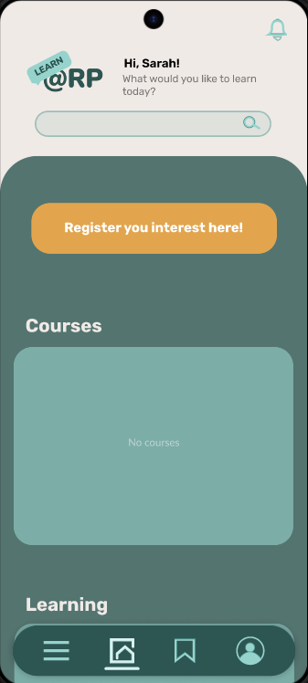
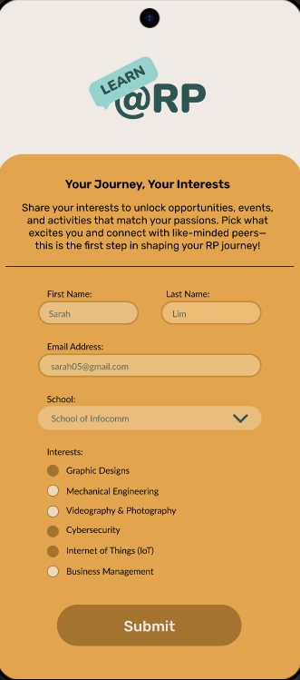

Interest Registration Page
This page enables users to personalise their learning experience by selecting topics they are interested in. Capturing user interests allows the app to deliver relevant course recommendations and reduce the effort required to discover suitable content.
- Redirects users back to the homepage after interest registration
- Dynamically updates the Recommended Courses section based on selected interests
- Supports personalised learning and improves content discoverability

